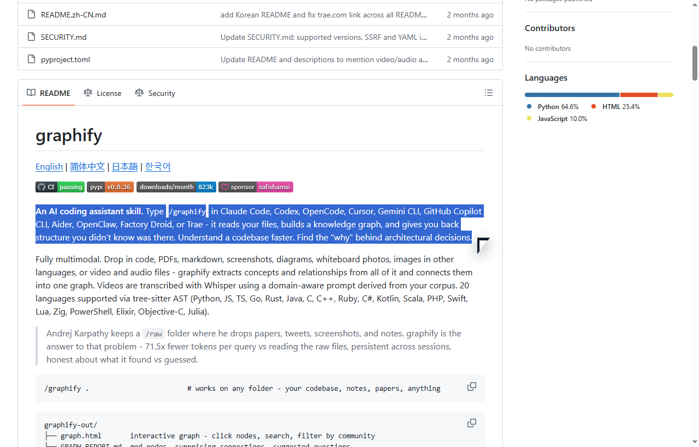
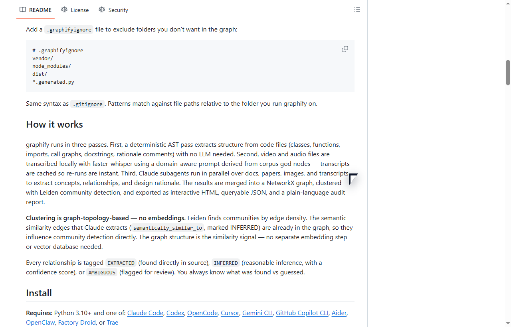

native proof 01. Repo Thesis 1.0s - 15.0s  我先圈这句，因为它把 graphify 的价值说得很直白：不是继续堆上下文，而是先还原结构。
native proof 03. Three Passes 27.9s - 41.4s  真正该放大的不是功能清单，而是这段机制说明。三段式流程决定它到底是不是工具链，而不只是可视化外壳。
static proof 04. Confidence Split still frame 最后这张静态 proof 单独保留 EXTRACTED / INFERRED 的真实浏览器选区，避免长录屏在这一段变得拖沓。